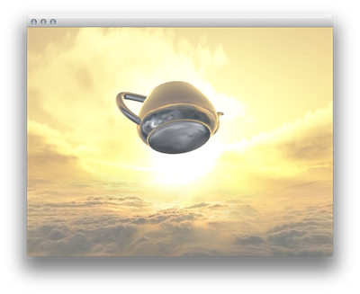

Cinder 0.9 Transition Guide
 This guide is meant to help users of previous versions of Cinder transition to version 0.9+. This release represents a number of changes and improvements, which are summarized below.
Highlights:
- All of Cinder’s OpenGL code has been updated to reflect the modern (OpenGL 3.2+) API.
- Cinder’s math libraries have been replaced with GLM.
- Cinder’ app:: internals have been refactored
OpenGL Changes:
OpenGL itself has evolved substantially in recent versions, and Cinder’s OpenGL implementation has been completely redesigned to take advantage of these changes. The baseline version requirement has been moved to OpenGL 3.2 Core Profile on desktop, and OpenGL ES 2 elsewhere.
Fundamental Changes:
In many ways, the evolution of OpenGL has been as focused on removing features as adding them. Probably the most important change is the removal of the “fixed function” pipeline. One implication is that a shader is always necessary in order to draw. Furthermore, “immediate mode” (glBegin(), glVertex(), glEnd(), etc) calls are no longer supported. Instead, any vertex data (positions, normals, etc) must be supplied in blocks of memory called vertex buffers (VBOs). These are just a few of the many changes that Cinder 0.9.0’s GL functionality has been designed to respond to. We’ve endeavored to keep a relatively straightforward API while still exposing the most recent functionality in OpenGL.
A separate guide provides more in-depth documentation of Cinder’s new GL API. In addition, please consult the samples/_opengl directory for useful examples.
Math Changes:
Cinder no longer uses its own classes for mathematics, and instead has moved to the popular GLM library. This library is designed to closely match the math primitives and functions in GLSL. Most of GLM’s functions are promoted into the ci:: namespace, but for less common names you may need to qualify using glm::.
Types:
ci::Vec2f,ci::Vec3f,ci::Vec4f→ vec2, vec3, vec4ci::Vec2d,ci::Vec3d,ci::Vec4d→ dvec2, dvec3, dvec4ci::Vec2i,ci::Vec3i,ci::Vec4i→ ivec2, ivec3, ivec4ci::Matrix33f,ci::Matrix44f→ mat3, mat4ci::Matrix33d,ci::Matrix44d→ dmat3, dmat4ci::Quatf,ci::Quatd→quat ,dquat ci::MatrixAffine2f→ mat3 (see below)
One key difference to Cinder's math classes is that these primitives provide default constructors. The vectors default construct to zero, and the matrix and quaternion variants default construct to the identity transformation. Consequently, there's no equivalent to Vec2f::zero(), for example. Simply use the default constructor for vec2. Additionally, a few convenience functions like Vec3f::zAxis() do not have equivalents; simply use vec3( 0, 0, 1 ) in that case.
Functions:
GLM, like GLSL, uses free functions in places where Cinder’s own math classes formerly used member functions:
myVec2f.length() → length( myVec2 )myVecA.dot( myVecB ) → dot( myVecA, myVecB )
For basic transformations, use the built-in scale(), translate() and rotate() methods. These methods have 2 variants. The first takes an existing mat4 and returns a copy of this matrix with the transformation applied. The second one does not take a mat4, simply returning the transformation applied to the identity matrix.
mat4 ex = rotate( 0.04f, vec3( 0, 1, 0 ) ); // returns a rotation by 0.04 radians around Y axis
mat4 ex2 = scale( ex, vec3( 2 ) ); // returns ‘ex’ uniformly scaled by 2
Quaternions:
To construct a quaternion that represents the rotation from vec3 vecA to vecB:
quat myQuat = rotation( vecA, vecB )
To construct a quaternion that represents a rotation by angle radians around axis:
quat myQuat = angleAxis( angle, axis );
Additionally, note that in glm quaternion multiplication order is reversed relative to Cinder’s former Quatf class. So myQuatA * myQuatB is now myQuatB * myQuatA.
MatrixAffine2f:
For 2D transformations, Cinder formerly used a custom class MatrixAffine2f that has been replaced by glm::mat3. 2D transformations can be constructed using scale(), translate() and rotate(). Note that these functions all require a mat3 as the first parameter, which represents the matrix to be transformed, and which can be the identity matrix.
mat3 ex = scale( mat3(), vec2( 2 ) ); // returns a uniform scale by 2
mat3 ex2 = rotate( ex, 0.04f ); // returns ‘ex’ rotated by 0.04 radians around the z-axis
App-related Changes:
A key change is that Cinder applications now derive from app::AppBasic (with the exception of things like screensavers). Additionally, Cinder apps are instantiated with the CINDER_APP() macro now instead of CINDER_APP_BASIC(). A parallel change to the headers means "cinder/app/App.h" should now be #included instead of "cinder/app/AppBasic.h". Finally, the App::prepareSettings() virtual method has been removed in favor of an optional third parameter to the macro. This change allows the construction of GL objects in app constructors, among other things. This third parameter can be a lambda:
CINDER_APP( ExampleApp, RendererGl(), [&]( App::Settings *settings ) {
settings->setWindowSize( 1280, 720 );
})
or it can be a function pointer:
CINDER_APP( ExampleApp, RendererGl(), ExampleApp::prepareSettings )
While the Boost libraries still ship with Cinder, we’ve begun the process of deprecating them in this release, as much of the functionality we originally relied on is now part of C++11 and later. Users are obviously welcome to continue using Boost in their own code, but CinderBlock authors are encouraged to remove dependencies where possible. As a first step toward this change, Cinder’s Boost directory has moved from $(CINDER)/boost to $(CINDER)/include/boost.
Mac-specific Changes:
32-bit Mac apps are still supported but are deprecated. By default Cinder apps are 64-bit on OS X.
Several OS-level frameworks have been added to all Cinder apps:
IOSurface, IOKit, AVFoundation, CoreMedia
And these are no longer necessary:
QuickTime, QTKit
MSW-specific Changes:
Visual C++ 2015 is supported. Additionally, the ANGLE renderer allows Cinder apps to run without GL drivers.